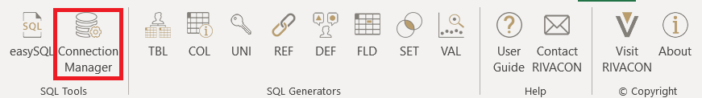
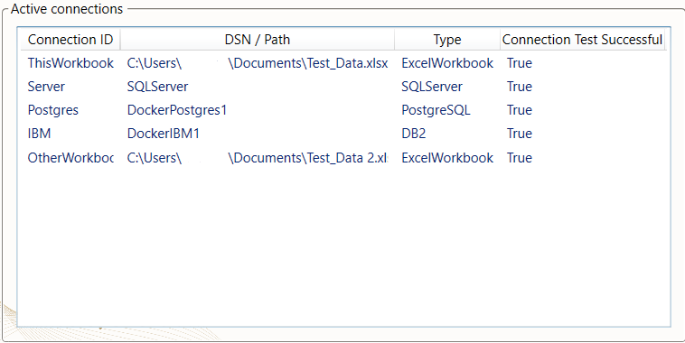
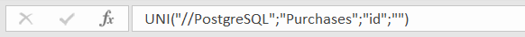
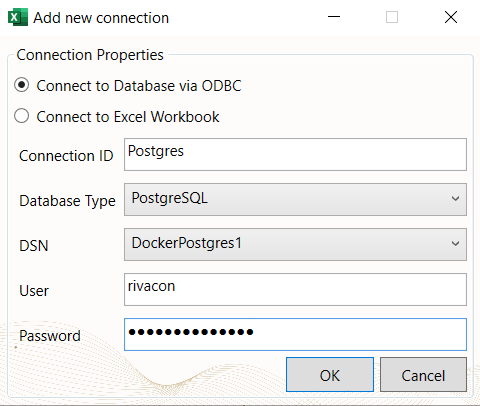
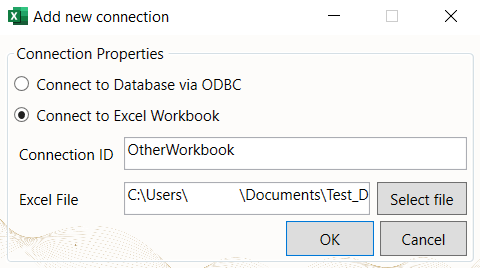

Connection Manager
Connecting external databases and workbooks
With the Connection Manager, it is possible to establish a connection to different types of databases and external workbooks.

Figure 1: Navigation to the Connection Manager
Overview

Figure 2: Connection Manager Overview
The "Active Connections" section gives an overview of all connections. To use a data source for a query, reference its CONNECTION ID. Therefore, Connection IDs may not be used twice.
Dummy Connections
To use worksheet functions, you always have to specify a data source. To still have the option of generating queries, we integrated so-called "dummy connections". They make it possible to create SQL queries with our generators for any database type without being connected to any source.
Dummy connections can be accessed by a // combined with the name of a data source type.
So instead of choosing Postgres or IMB (see Figure 2), you can create the same query with //PostgreSQL or //DB2 as the connection id as in Figure 3.
This feature is only available for the worksheet functions:

Figure 3: Example of a dummy connection for PostgreSQL
Manage Connections
There are three buttons for manually editing the set of active connections.
Add
If you would like to add a new ODBC connection, please make sure, that you can find it in the "ODBC data sources" manager in windows.
After pressing the Add button, you will see another window, which is shown below.
You can choose an arbitrary connection id, which will be later used to reference the data source in generators and worksheet functions.

Figure 4: "Add new connection" window for ODBC database
To add an Excel workbook as a data source, simply choose a connection id and input its path. Note, that the workbook must be saved either locally or in OneDrive. Other Cloud services are not supported in this version of RIVALYTICS.

Figure 5: "Add new connection" window for Excel database
Edit
To edit a connection, the windows from Figures 3 and 4 will appear again to make modifications. You can edit every connection except for "ThisWorkbook".
Delete
Once a data source is not necessary anymore, you can select it by clicking on the connection in the "Active connections" overview and pressing the Delete item button to remove it from the list.
Test
If a connection cannot be established, the column "Connection Test Successful" in the "Active connections" overview will show FALSE.
To perform the connection test one again, press the "Test connection" button.
Save Connections
With the "Save as" and "Load" buttons, you can manage connections a lot quicker.
Save
To save every connection in an encrypted file, you will need to select a path for the file and a password, which has to contain at least:
- 8 characters
- one uppercase letter
- one lowercase letter
- one number
- one special character (e.g.
!,?,$,&etc.)
Load
To load the file with the saved connections, simply select it from your local storage and decrypt it with your chosen password to load the databases.